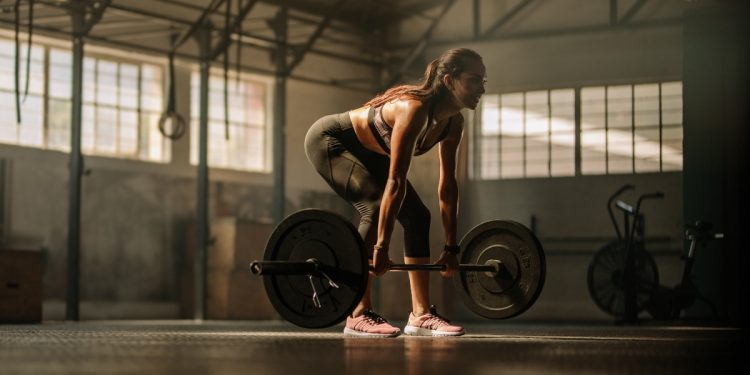
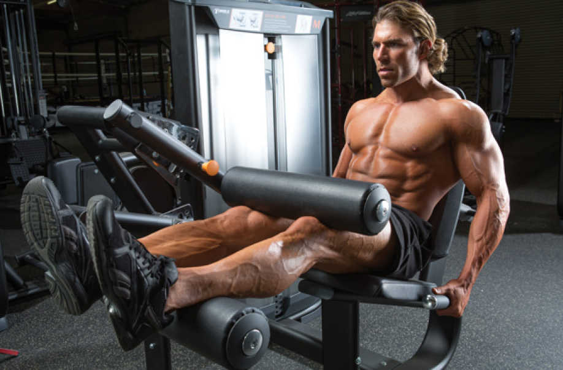
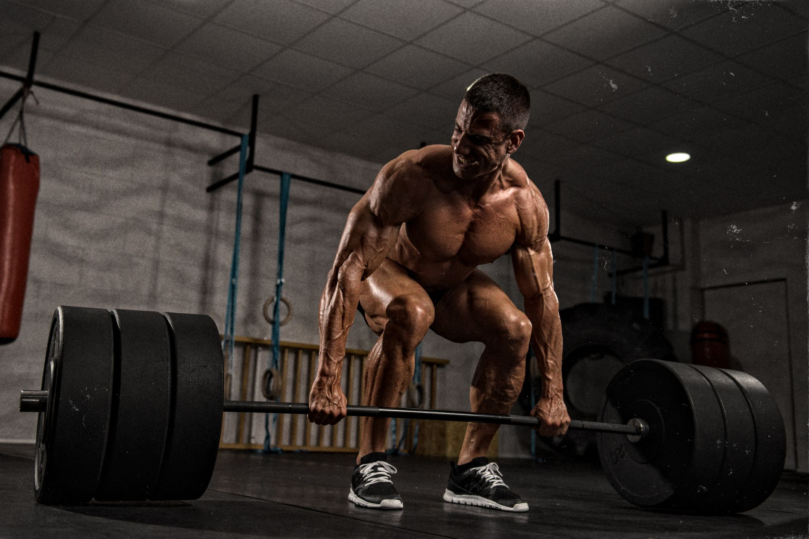
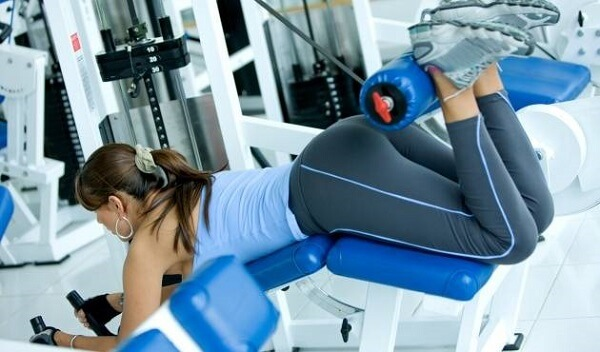

Los isquiotibiales son un grupo muscular ubicado en la parte posterior del muslo y están formados por tres músculos principales: el bíceps femoral, el semitendinoso y el semimembranoso. Los isquiotibiales son importantes para la estabilidad de la pelvis y la cadera, así como para la flexión de la rodilla y la extensión de la cadera. También son cruciales para actividades como correr, saltar y levantar objetos del suelo. Es muy importante darle la misma importancia que le damos al cuádriceps a este ejercicio.
Este es un ejercicio avanzado que requiere una buena técnica para evitar lesiones. Recuerda siempre aprovechar al entrenador que tengas en tu gimnasio para que te indique como realizar los ejercicios de forma adecuada, sobre todo en ejercicios de este tipo. Habiendo dejado claro todo estoen claro los puntos anteriores, el Peso Muerto Rumano es una variante del peso muerto enfocada en los isquiotibiales, y trabaja bastante los glúteos también, por eso es el primero en esta lista y el mejor.
Este ejercicio se hizo con el segundo lugar de la lista debido a los beneficios que proporciona, una aspecto negativo que presenta es que no es muy común la máquina necesaria para realizar el ejercicio. Sin embargo el Curl Femoral Sentado presenta numerosos beneficios, como por ejemplo estímulo en la zona más grande del isquiotibial, lo que representa mayor crecimiento del músculo en cuestión, aportanto mejores resultados visuales que la variante en horizonal del ejercicio (Curl Femoral Acostado). Sería como la contraparte del ejercicio "Extensión de Cuádriceps".
Este ejercicio es de los más populares y beneficiosos para el cuerpo y es el ejercicio que más peso permite manejar. Si bien trabaja principalmente los isquiotibiales también recluta en gran medida varios otros grupos músculares, por eso queda tercera en esta lista. El Peso Muerto Convencional es de los ejercicios más efectivos para trabajar la cadena posterior del cuerpo, incluyendo los músculos de la espalda baja, los glúteos, los isquiotibiales, los antebrazos, los dorsales y los erectores de la columna vertebral.
Este es un ejercicio para los isquiotibiales bastante popular, a diferencia del "Curl Femoral Sentado" este ejercicio se hace con una máquina que suele estar presente en mayor cantidad de gimnasios. El Curl Femoral Acostado es un gran ejercicio, que trabaja muy bien el músculo en cuestión. Su relativa "inferioridad" respecto a su contraparte, Sentado, es mínima en comparación. Es un ejercicio muy útil para calentar los femorales antes de hacer ejercicios de Sentadilla, te recomiendo encarecidamente probrar hacer 2 series como calentamiento antes de realizar Sentadilla Libre, notarás buenos resultados.
